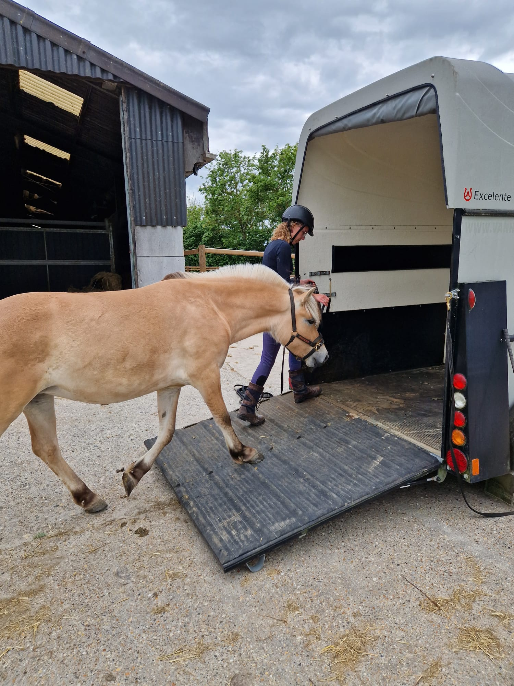

Trailerladen
Voor het ene paard is de trailer geen probleem, voor het andere paard voelt het als een grote uitdaging.
Misschien heb je een jong paard dat nog nooit een trailer van binnen heeft gezien. Of een paard dat door een vervelende ervaring angst heeft ontwikkeld. Sommige paarden durven niet in de buurt van de klep te komen, andere lopen tot aan de ingang, maar zetten geen stap verder. Er zijn ook paarden die plotseling achteruitvliegen, zich losrukken of in paniek raken zodra de klep sluit. Er zijn ook paarden die makkelijk de trailer in- en uitstappen, maar erg veel stress ervaren tijdens het vervoer.
Na een telefonische kennismaking maak ik een plan wat past bij jou en je paard. Mijn doel is om jou en je paard te leren dat trailerladen en transport veilig zijn, zodat jullie vanuit echt vertrouwen samen zorgeloos op pad gaan.
Bespreek jullie situatie